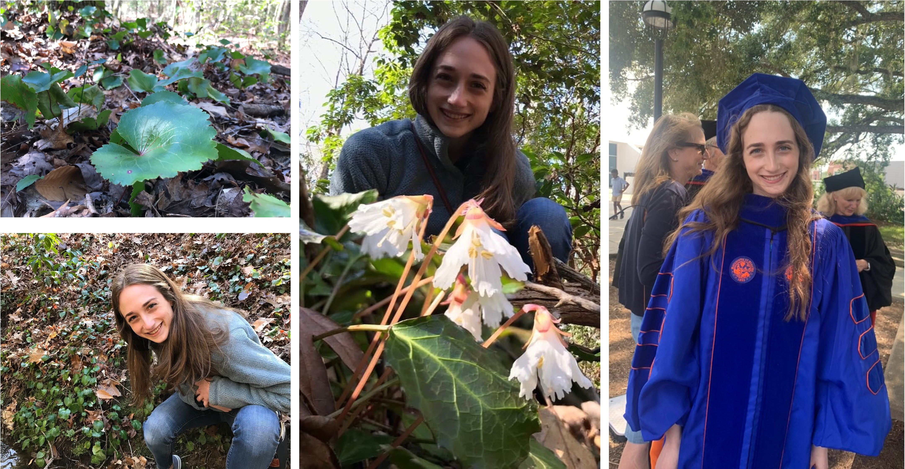

{% include bluesky.html %}

Hi, my name is Shelly (see About). My general research interest is polyploidy evolution and population genetics.
In January 2027, I will be starting as an Assistant Professor at Florida State University in the Ecology & Evolution Division within the Department of Biological Science. My lab group is called the "GEEP" lab, which stands for Gaynor Ecology and Evolution of Polyploids.
I will be recruiting graduate students to start in Fall 2027. I also have funding for a postdoctoral researcher and a technician starting Spring 2027 - please send me an email if your interested!
Find out more about the GEEP lab's research (see Research), software (see Software), and the people who contribute (see People).
Note, this website is currently being updated.